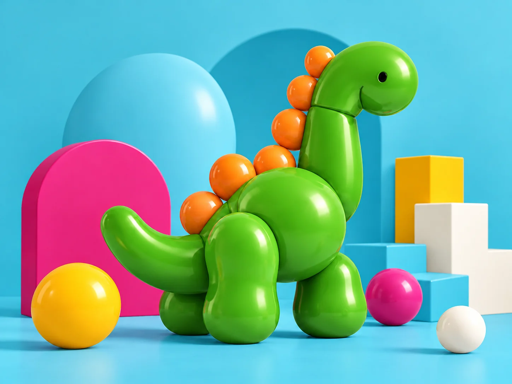
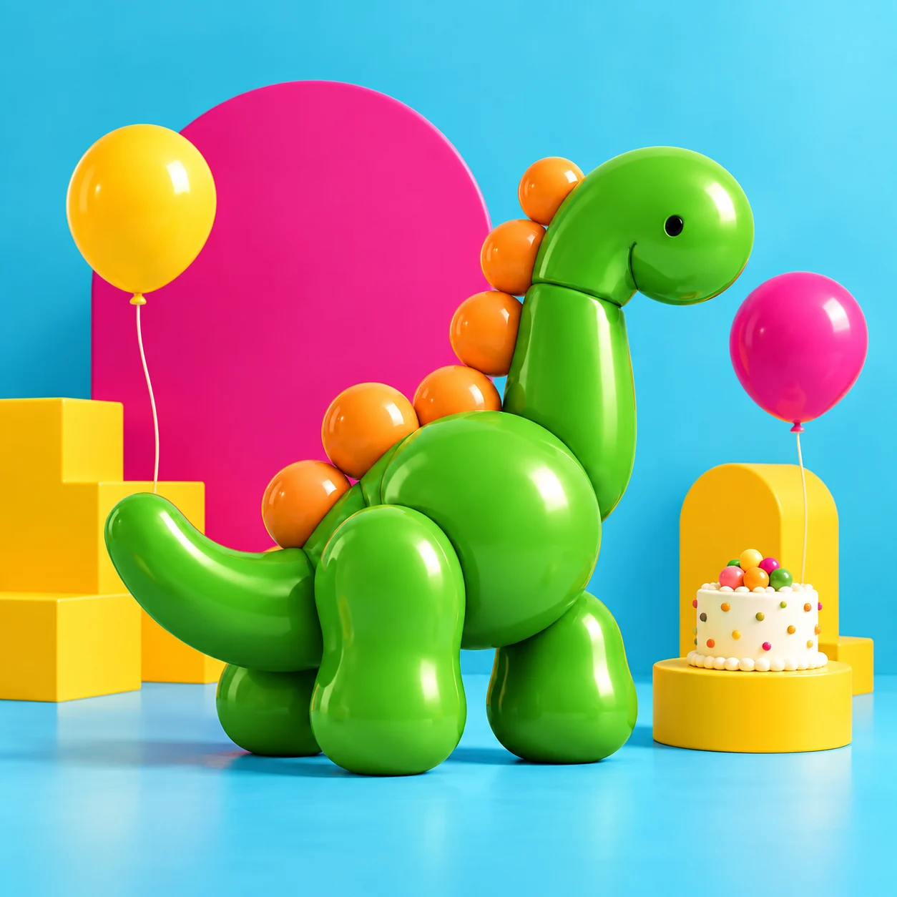
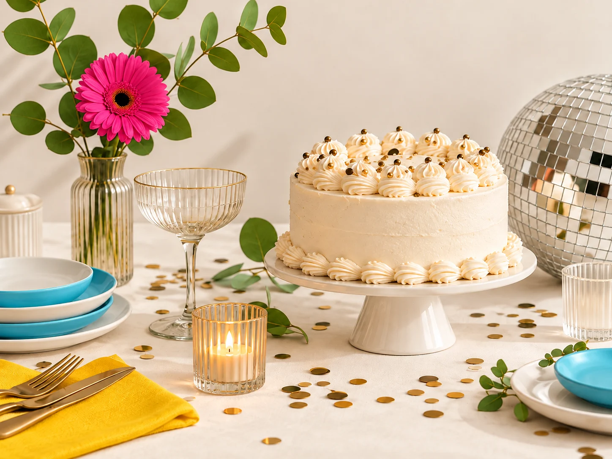

Diverdino Kids
Cumpleaños y aventuras infantiles.
Preparar mi celebración ↗Cumpleaños infantiles, reuniones familiares y planes con amigos. Un espacio en Elche para estar juntos y dar juego a los peques.

El mismo lugar, muchas formas de vivirlo. Elige la celebración que tienes en mente y empecemos a darle forma.

Cumpleaños y aventuras infantiles.
Preparar mi celebración ↗Tus 16. Tus 18. Tu manera de celebrar.
Preparar mi celebración ↗
Reuniones de familia, amigos y cenas.
Preparar mi celebración ↗Imágenes creativas de marca. Las fotografías y condiciones de cada montaje se concretarán antes de contratar.
Charlas, talleres, reuniones o esa quedada que siempre aplazáis. Cuéntanos el plan y prepararemos una propuesta para vuestro grupo.
También rocódromo y zona baby, para sumar aventuras a la celebración infantil.
Conoce el espacio real antes de reservar ↗75 personas en total. Niños y adultos compartiendo el mismo gran plan.
Carrer Francisco Vicente Rodríguez, 38 · 03202 ElcheElige tu celebración, consulta el calendario y empieza a imaginarla.
Cuéntanos qué tipo de celebración quieres organizar.
Prueba el recorrido de reserva en la agenda de demostración.
Revisa asistentes, turno y servicios antes del gran día.
El local dispone de cocina. Consulta con el equipo qué alimentos, equipamiento y servicios puedes utilizar, y las condiciones de limpieza o catering para tu celebración.
En esta propuesta solo se crean registros de prueba en tu navegador. La reserva real se acuerda con Diverdino. El sistema definitivo comprobará disponibilidad y confirmará cuando reciba la señal; no bastará con enviar una solicitud.
La línea Social recoge esa posibilidad. Cada solicitud se revisará con la persona responsable para concretar asistentes, supervisión, actividad y horarios permitidos. La demo no confirma este tipo de evento automáticamente.
| Turno | Lunes–jueves | Viernes–domingo y festivos |
|---|---|---|
| 10:00–14:00 | 80 € | 120 € |
| Tarde desde 16:00 | 100 € · hasta 21:00 | 130 € · hasta 21:30 |
| Día completo 10:00–21:00 | 190 € | 190 € |
Confirmación del día: 20 €. Servicio de limpieza: 25 €. Hora extra: 20 €/h. La limpieza, las horas adicionales y el tratamiento de la señal se acuerdan antes de contratar. Las tarifas corresponden al alquiler del local; no incluyen comida, animación ni decoración salvo contratación expresa.